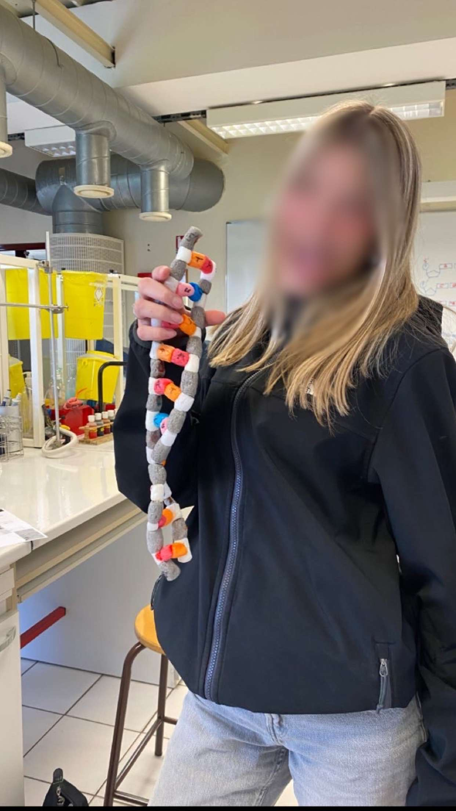
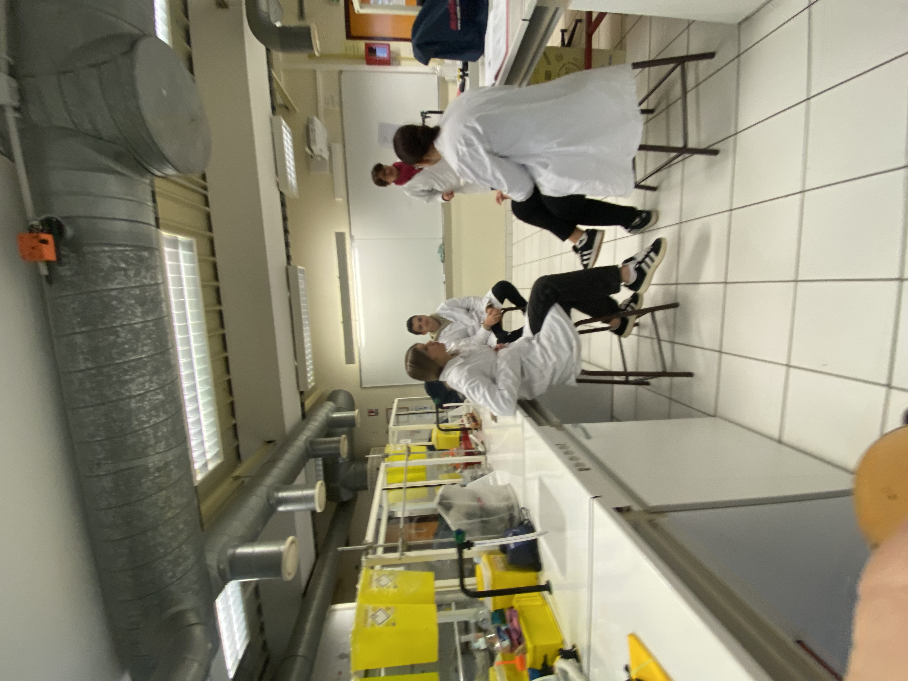
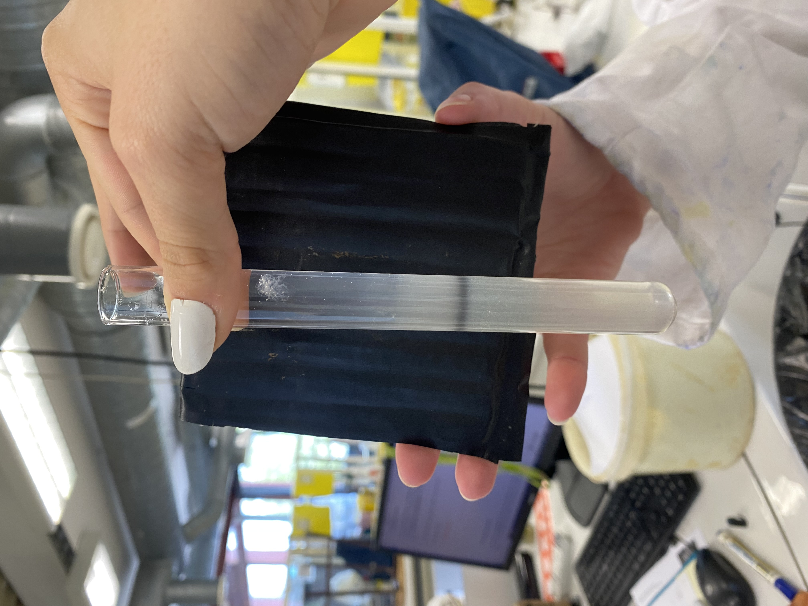

Présentation du laboratoire
Nous allons vous présenter les expériences qui peuvent être réalisées en seconde GTT (générale très technologique)
1) Construction d'une molécule d'ADN

lien vers le tp1
2) Réalisation du frotifixé

lien vers le tp2
3) Extraction de l'ADN de kiwi

lien vers le tp3
réalisée par Lilou,Antonin et Sarah